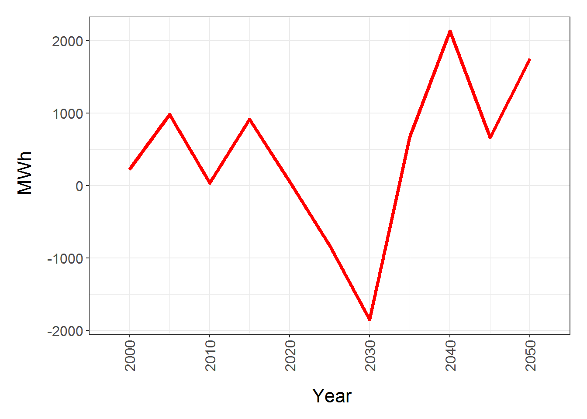
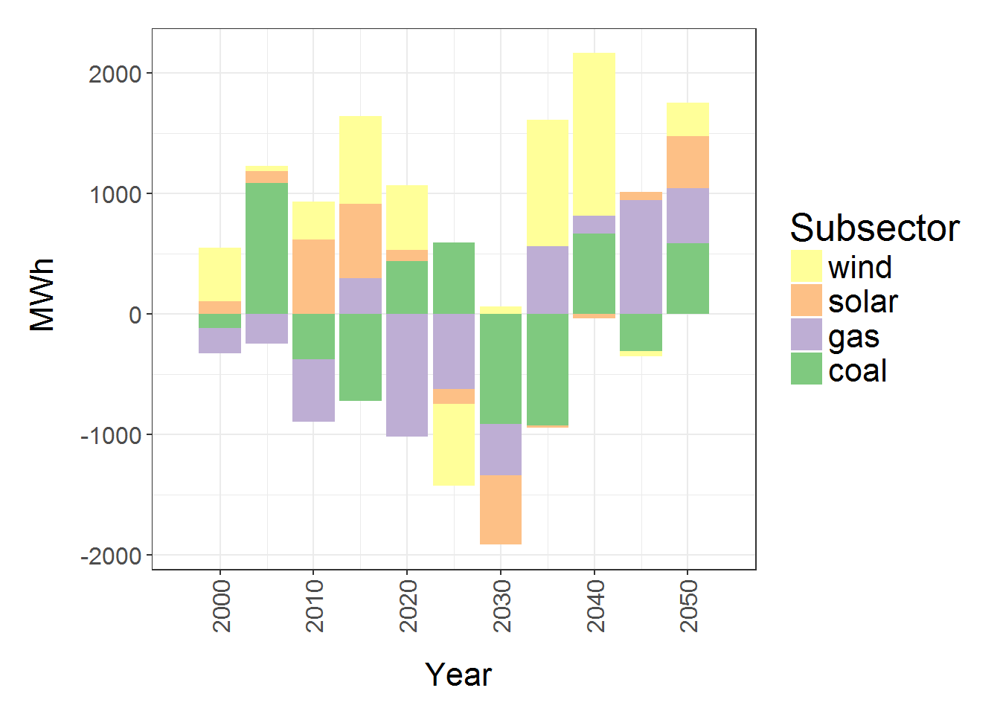

Programs - R
R Initial
- To display R code chunks with code and output use:
{r} x=2 - To display R code output without code use
{r,echo=F} x=2 - To display R code without output use
{r,eval=F} x=2
if("ggplot2" %in% rownames(installed.packages()) == FALSE) {install.packages("ggplot2")};library(ggplot2)
# Load packagesR Directories and Files
Create & delete
wd0 <- getwd() # Get current dirctory
dirname(wd0) # Gives parent directory of the current one
dir.create("x") # creates directory x in working dir
dir.create(paste(getwd(),"/x/y",sep="")) # creates directory y within x
file.create(paste(getwd(),"/x/y/example.txt",sep="")) # create a text file
file.remove(paste(getwd(),"/x/y/example.txt",sep="")) # remove a file
unlink("x",recursive=T) # delete entire foldersR Reading and Saving Files
# Function to save figures as pdf or png
pdfOnly<-1;
if(pdfOnly==1){pdf(paste(dir,"/",filename,".pdf",sep=""),width=figWidth_Inch,height=figHeight_Inch)
print(figure)
dev.off()} else{
pdf(paste(dir,"/",filename,".pdf",sep=""),width=figWidth_Inch,height=figHeight_Inch)
print(figure)
dev.off()
png(paste(dir,"/",filename,".png",sep=""),width=png_Width, height=png_Width*figHeight_Inch/figWidth_Inch, units="px")
print(figure)
dev.off()
}
}
# csv files
read.csv(paste("XXX.csv",sep=""), stringsAsFactors = F, header=F)
write.csv(df,file=paste("XXX.csv",sep=""),row.names=F)R Manipulate Data
Reshape Data (Wide, Long)
rm(list=ls())
if(!require(reshape2)){install.packages("reshape2")};library(reshape2) # Load packages## Loading required package: reshape2if(!require(dplyr)){install.packages("dplyr")};library(dplyr) # Load packages## Loading required package: dplyr##
## Attaching package: 'dplyr'## The following objects are masked from 'package:stats':
##
## filter, lag## The following objects are masked from 'package:base':
##
## intersect, setdiff, setequal, unionif(!require(tibble)){install.packages("tibble")};library(tibble) # Load packages## Loading required package: tibble# Create Dummy Data
df<-data.frame(names=c("Z","A","X","W","Z","A","X","W","Z","A","X","W"),
subname=c("Z1","A1","X1","W1","Z2","A2","X2","W2","Z3","A3","X3","W3"),
freq=c(10,12,2,5,13,21,23,52,101,122,21,52),
color=c("blue","red","red","red","green","blue","red","green","blue","red","red","green"));print(df)## names subname freq color
## 1 Z Z1 10 blue
## 2 A A1 12 red
## 3 X X1 2 red
## 4 W W1 5 red
## 5 Z Z2 13 green
## 6 A A2 21 blue
## 7 X X2 23 red
## 8 W W2 52 green
## 9 Z Z3 101 blue
## 10 A A3 122 red
## 11 X X3 21 red
## 12 W W3 52 green# Go from Long to Wide format using dcast
#dcast(data,row1+row2~col1+col2,value.var="value", fun.aggregate=functions (e.g. sum or mean))
df_wide<-dcast(df,names+subname~color,value.var="freq",fun.aggregate=sum,na.rm=T);print(df_wide)## names subname blue green red
## 1 A A1 0 0 12
## 2 A A2 21 0 0
## 3 A A3 0 0 122
## 4 W W1 0 0 5
## 5 W W2 0 52 0
## 6 W W3 0 52 0
## 7 X X1 0 0 2
## 8 X X2 0 0 23
## 9 X X3 0 0 21
## 10 Z Z1 10 0 0
## 11 Z Z2 0 13 0
## 12 Z Z3 101 0 0#Go from Wide to Long using melt can ignore measure.vars if want all of them to collapse
#dt3<-melt(dt2, id.vars=c("year","month"), measure.vars=c(""), value.name="",variable.name="Level_m")
df_long<-melt(df_wide, id.vars=c("names","subname"), value.name="freq",variable.name="color");print(df_long)## names subname color freq
## 1 A A1 blue 0
## 2 A A2 blue 21
## 3 A A3 blue 0
## 4 W W1 blue 0
## 5 W W2 blue 0
## 6 W W3 blue 0
## 7 X X1 blue 0
## 8 X X2 blue 0
## 9 X X3 blue 0
## 10 Z Z1 blue 10
## 11 Z Z2 blue 0
## 12 Z Z3 blue 101
## 13 A A1 green 0
## 14 A A2 green 0
## 15 A A3 green 0
## 16 W W1 green 0
## 17 W W2 green 52
## 18 W W3 green 52
## 19 X X1 green 0
## 20 X X2 green 0
## 21 X X3 green 0
## 22 Z Z1 green 0
## 23 Z Z2 green 13
## 24 Z Z3 green 0
## 25 A A1 red 12
## 26 A A2 red 0
## 27 A A3 red 122
## 28 W W1 red 5
## 29 W W2 red 0
## 30 W W3 red 0
## 31 X X1 red 2
## 32 X X2 red 23
## 33 X X3 red 21
## 34 Z Z1 red 0
## 35 Z Z2 red 0
## 36 Z Z3 red 0# Aggregate data to summarize
df_agg<-aggregate(freq~names, data=df_long, sum, na.rm=TRUE); print(df_agg)## names freq
## 1 A 155
## 2 W 109
## 3 X 46
## 4 Z 124# Aggregate over some names only
select_names<-c("Z","X")
df_long_select<-df_long[df_long$name %in% select_names,];head(df_long_select)## names subname color freq
## 7 X X1 blue 0
## 8 X X2 blue 0
## 9 X X3 blue 0
## 10 Z Z1 blue 10
## 11 Z Z2 blue 0
## 12 Z Z3 blue 101df_agg_select<-aggregate(freq~names, data=df_long_select, sum, na.rm=TRUE); print(df_agg_select)## names freq
## 1 X 46
## 2 Z 124# Load pre-loaded data
data(mtcars);head(mtcars)## mpg cyl disp hp drat wt qsec vs am gear carb
## Mazda RX4 21.0 6 160 110 3.90 2.620 16.46 0 1 4 4
## Mazda RX4 Wag 21.0 6 160 110 3.90 2.875 17.02 0 1 4 4
## Datsun 710 22.8 4 108 93 3.85 2.320 18.61 1 1 4 1
## Hornet 4 Drive 21.4 6 258 110 3.08 3.215 19.44 1 0 3 1
## Hornet Sportabout 18.7 8 360 175 3.15 3.440 17.02 0 0 3 2
## Valiant 18.1 6 225 105 2.76 3.460 20.22 1 0 3 1# Add rownames as a column
df_mtcars<-as.data.frame(rownames_to_column(mtcars,"model"));head(df_mtcars)## model mpg cyl disp hp drat wt qsec vs am gear carb
## 1 Mazda RX4 21.0 6 160 110 3.90 2.620 16.46 0 1 4 4
## 2 Mazda RX4 Wag 21.0 6 160 110 3.90 2.875 17.02 0 1 4 4
## 3 Datsun 710 22.8 4 108 93 3.85 2.320 18.61 1 1 4 1
## 4 Hornet 4 Drive 21.4 6 258 110 3.08 3.215 19.44 1 0 3 1
## 5 Hornet Sportabout 18.7 8 360 175 3.15 3.440 17.02 0 0 3 2
## 6 Valiant 18.1 6 225 105 2.76 3.460 20.22 1 0 3 1R Subsetting
rm(list=ls())
if(!require(reshape2)){install.packages("reshape2")};library(reshape2) # Load packages
if(!require(dplyr)){install.packages("dplyr")};library(dplyr) # Load packages
if(!require(tibble)){install.packages("tibble")};library(tibble) # Load packages
# Create Dummy Data
df<-data.frame(names=c("Z","A","X","W","Z","A","X","W","Z","A","X","W"),
subname=c("Z1","A1","X1","W1","Z2","A2","X2","W2","Z3","A3","X3","W3"),
freq=c(10,12,2,5,13,21,23,52,101,122,21,52),
color=c("blue","red","red","red","green","blue","red","green","blue","red","red","green"));print(df)## names subname freq color
## 1 Z Z1 10 blue
## 2 A A1 12 red
## 3 X X1 2 red
## 4 W W1 5 red
## 5 Z Z2 13 green
## 6 A A2 21 blue
## 7 X X2 23 red
## 8 W W2 52 green
## 9 Z Z3 101 blue
## 10 A A3 122 red
## 11 X X3 21 red
## 12 W W3 52 green# Subset by column
df_select<-subset(df,select=c(subname,freq));print(df_select) # choose the columns## subname freq
## 1 Z1 10
## 2 A1 12
## 3 X1 2
## 4 W1 5
## 5 Z2 13
## 6 A2 21
## 7 X2 23
## 8 W2 52
## 9 Z3 101
## 10 A3 122
## 11 X3 21
## 12 W3 52df_selectR<-subset(df,select=-c(subname,freq));print(df_selectR) # remove certain columns## names color
## 1 Z blue
## 2 A red
## 3 X red
## 4 W red
## 5 Z green
## 6 A blue
## 7 X red
## 8 W green
## 9 Z blue
## 10 A red
## 11 X red
## 12 W greenR dplyr
# http://genomicsclass.github.io/book/pages/dplyr_tutorial.html
# select() select columns; filter() filter rows; arrange() re-order or arrange rows; mutate() create new columns
# summarise() summarise values; group_by() allows for group operations in the “split-apply-combine” concept
library(dplyr)
df<-data.frame(basins=rep(c("Basin 1","Basin 2"),each=36),
subbasins=rep(c(rep(c("SubBasin 1a","SubBasin 1b"),each=18),rep(c("SubBasin 2a","SubBasin 2b"),each=18))),
sector=rep(rep(c("Agr","Res","Elec"),each=6),2),
year=rep(rep(c("2010","2020","2030"),each=2),6*2),
technology=rep(c("gas","coal"),36),
energy=runif(2*3*3*2*2));df;## basins subbasins sector year technology energy
## 1 Basin 1 SubBasin 1a Agr 2010 gas 0.57701228
## 2 Basin 1 SubBasin 1a Agr 2010 coal 0.44100169
## 3 Basin 1 SubBasin 1a Agr 2020 gas 0.28610517
## 4 Basin 1 SubBasin 1a Agr 2020 coal 0.93292522
## 5 Basin 1 SubBasin 1a Agr 2030 gas 0.23379293
## 6 Basin 1 SubBasin 1a Agr 2030 coal 0.07348057
## 7 Basin 1 SubBasin 1a Res 2010 gas 0.50690350
## 8 Basin 1 SubBasin 1a Res 2010 coal 0.40466271
## 9 Basin 1 SubBasin 1a Res 2020 gas 0.41382125
## 10 Basin 1 SubBasin 1a Res 2020 coal 0.09984674
## 11 Basin 1 SubBasin 1a Res 2030 gas 0.40103263
## 12 Basin 1 SubBasin 1a Res 2030 coal 0.73097161
## 13 Basin 1 SubBasin 1a Elec 2010 gas 0.93923643
## 14 Basin 1 SubBasin 1a Elec 2010 coal 0.11662074
## 15 Basin 1 SubBasin 1a Elec 2020 gas 0.19735236
## 16 Basin 1 SubBasin 1a Elec 2020 coal 0.72096444
## 17 Basin 1 SubBasin 1a Elec 2030 gas 0.28101898
## 18 Basin 1 SubBasin 1a Elec 2030 coal 0.62763276
## 19 Basin 1 SubBasin 1b Agr 2010 gas 0.82391894
## 20 Basin 1 SubBasin 1b Agr 2010 coal 0.87224192
## 21 Basin 1 SubBasin 1b Agr 2020 gas 0.99232110
## 22 Basin 1 SubBasin 1b Agr 2020 coal 0.71024979
## 23 Basin 1 SubBasin 1b Agr 2030 gas 0.08866303
## 24 Basin 1 SubBasin 1b Agr 2030 coal 0.47827979
## 25 Basin 1 SubBasin 1b Res 2010 gas 0.36027465
## 26 Basin 1 SubBasin 1b Res 2010 coal 0.12389209
## 27 Basin 1 SubBasin 1b Res 2020 gas 0.61795067
## 28 Basin 1 SubBasin 1b Res 2020 coal 0.21073729
## 29 Basin 1 SubBasin 1b Res 2030 gas 0.99575269
## 30 Basin 1 SubBasin 1b Res 2030 coal 0.69855519
## 31 Basin 1 SubBasin 1b Elec 2010 gas 0.64766911
## 32 Basin 1 SubBasin 1b Elec 2010 coal 0.06579259
## 33 Basin 1 SubBasin 1b Elec 2020 gas 0.63696053
## 34 Basin 1 SubBasin 1b Elec 2020 coal 0.19522153
## 35 Basin 1 SubBasin 1b Elec 2030 gas 0.72531066
## 36 Basin 1 SubBasin 1b Elec 2030 coal 0.59922532
## 37 Basin 2 SubBasin 2a Agr 2010 gas 0.92170692
## 38 Basin 2 SubBasin 2a Agr 2010 coal 0.66899575
## 39 Basin 2 SubBasin 2a Agr 2020 gas 0.99474185
## 40 Basin 2 SubBasin 2a Agr 2020 coal 0.54538504
## 41 Basin 2 SubBasin 2a Agr 2030 gas 0.69533875
## 42 Basin 2 SubBasin 2a Agr 2030 coal 0.92517590
## 43 Basin 2 SubBasin 2a Res 2010 gas 0.71093008
## 44 Basin 2 SubBasin 2a Res 2010 coal 0.71712548
## 45 Basin 2 SubBasin 2a Res 2020 gas 0.37311968
## 46 Basin 2 SubBasin 2a Res 2020 coal 0.49802443
## 47 Basin 2 SubBasin 2a Res 2030 gas 0.74068118
## 48 Basin 2 SubBasin 2a Res 2030 coal 0.01712595
## 49 Basin 2 SubBasin 2a Elec 2010 gas 0.31357058
## 50 Basin 2 SubBasin 2a Elec 2010 coal 0.88967776
## 51 Basin 2 SubBasin 2a Elec 2020 gas 0.41310995
## 52 Basin 2 SubBasin 2a Elec 2020 coal 0.95633092
## 53 Basin 2 SubBasin 2a Elec 2030 gas 0.52217391
## 54 Basin 2 SubBasin 2a Elec 2030 coal 0.87209184
## 55 Basin 2 SubBasin 2b Agr 2010 gas 0.60963043
## 56 Basin 2 SubBasin 2b Agr 2010 coal 0.99946132
## 57 Basin 2 SubBasin 2b Agr 2020 gas 0.07379617
## 58 Basin 2 SubBasin 2b Agr 2020 coal 0.59488864
## 59 Basin 2 SubBasin 2b Agr 2030 gas 0.50502613
## 60 Basin 2 SubBasin 2b Agr 2030 coal 0.39229141
## 61 Basin 2 SubBasin 2b Res 2010 gas 0.42563265
## 62 Basin 2 SubBasin 2b Res 2010 coal 0.78472572
## 63 Basin 2 SubBasin 2b Res 2020 gas 0.18028278
## 64 Basin 2 SubBasin 2b Res 2020 coal 0.65536338
## 65 Basin 2 SubBasin 2b Res 2030 gas 0.02484936
## 66 Basin 2 SubBasin 2b Res 2030 coal 0.40395301
## 67 Basin 2 SubBasin 2b Elec 2010 gas 0.90436232
## 68 Basin 2 SubBasin 2b Elec 2010 coal 0.62878684
## 69 Basin 2 SubBasin 2b Elec 2020 gas 0.49089303
## 70 Basin 2 SubBasin 2b Elec 2020 coal 0.56149793
## 71 Basin 2 SubBasin 2b Elec 2030 gas 0.38839317
## 72 Basin 2 SubBasin 2b Elec 2030 coal 0.56135552# Select (-, starts_with(), ends_with(), contains(), matches(),one_of())
dfx<-df%>%dplyr::select(-basins); head(dfx);## subbasins sector year technology energy
## 1 SubBasin 1a Agr 2010 gas 0.57701228
## 2 SubBasin 1a Agr 2010 coal 0.44100169
## 3 SubBasin 1a Agr 2020 gas 0.28610517
## 4 SubBasin 1a Agr 2020 coal 0.93292522
## 5 SubBasin 1a Agr 2030 gas 0.23379293
## 6 SubBasin 1a Agr 2030 coal 0.07348057dfx<-df%>%dplyr::select(ends_with("basins")); head(dfx);## basins subbasins
## 1 Basin 1 SubBasin 1a
## 2 Basin 1 SubBasin 1a
## 3 Basin 1 SubBasin 1a
## 4 Basin 1 SubBasin 1a
## 5 Basin 1 SubBasin 1a
## 6 Basin 1 SubBasin 1adfx<-df%>%dplyr::select(contains("tech")); head(dfx);## technology
## 1 gas
## 2 coal
## 3 gas
## 4 coal
## 5 gas
## 6 coaldfx<-df%>%dplyr::select(sector:energy); head(dfx);## sector year technology energy
## 1 Agr 2010 gas 0.57701228
## 2 Agr 2010 coal 0.44100169
## 3 Agr 2020 gas 0.28610517
## 4 Agr 2020 coal 0.93292522
## 5 Agr 2030 gas 0.23379293
## 6 Agr 2030 coal 0.07348057dfx<-df%>%dplyr::select(matches("ins")); head(dfx);## basins subbasins
## 1 Basin 1 SubBasin 1a
## 2 Basin 1 SubBasin 1a
## 3 Basin 1 SubBasin 1a
## 4 Basin 1 SubBasin 1a
## 5 Basin 1 SubBasin 1a
## 6 Basin 1 SubBasin 1a# Filter
dfx<-df%>%filter(subbasins=="SubBasin 1a"); head(dfx);## basins subbasins sector year technology energy
## 1 Basin 1 SubBasin 1a Agr 2010 gas 0.57701228
## 2 Basin 1 SubBasin 1a Agr 2010 coal 0.44100169
## 3 Basin 1 SubBasin 1a Agr 2020 gas 0.28610517
## 4 Basin 1 SubBasin 1a Agr 2020 coal 0.93292522
## 5 Basin 1 SubBasin 1a Agr 2030 gas 0.23379293
## 6 Basin 1 SubBasin 1a Agr 2030 coal 0.07348057dfx<-df%>%filter(subbasins %in% c("SubBasin 1a","SubBasin 2b")); head(dfx);## basins subbasins sector year technology energy
## 1 Basin 1 SubBasin 1a Agr 2010 gas 0.57701228
## 2 Basin 1 SubBasin 1a Agr 2010 coal 0.44100169
## 3 Basin 1 SubBasin 1a Agr 2020 gas 0.28610517
## 4 Basin 1 SubBasin 1a Agr 2020 coal 0.93292522
## 5 Basin 1 SubBasin 1a Agr 2030 gas 0.23379293
## 6 Basin 1 SubBasin 1a Agr 2030 coal 0.07348057dfx<-df%>%filter(grepl("a$",subbasins)); head(dfx); ## basins subbasins sector year technology energy
## 1 Basin 1 SubBasin 1a Agr 2010 gas 0.57701228
## 2 Basin 1 SubBasin 1a Agr 2010 coal 0.44100169
## 3 Basin 1 SubBasin 1a Agr 2020 gas 0.28610517
## 4 Basin 1 SubBasin 1a Agr 2020 coal 0.93292522
## 5 Basin 1 SubBasin 1a Agr 2030 gas 0.23379293
## 6 Basin 1 SubBasin 1a Agr 2030 coal 0.07348057R regexp
# RegExpressions
# "" place expresion inside
# ^X starting with X
# X$ Ending with X
# containing X
v<-c("xx12xx23xx","xx123","123xx","12xx3"); v## [1] "xx12xx23xx" "xx123" "123xx" "12xx3"vx<-grep("x$",v,value=F);vx## [1] 1 3vx<-grep("x$",v,value=T);vx## [1] "xx12xx23xx" "123xx"vx<-v[grep("x$",v,value=F)];vx## [1] "xx12xx23xx" "123xx"vx<-grepl("x$",v);vx## [1] TRUE FALSE TRUE FALSEvx<-v[grepl("x$",v)];vx## [1] "xx12xx23xx" "123xx"vx<-v[!grepl("x$",v)];vx## [1] "xx123" "12xx3"R Colors
https://www.nceas.ucsb.edu/~frazier/RSpatialGuides/colorPaletteCheatsheet.pdf
http://www.stat.columbia.edu/~tzheng/files/Rcolor.pdf
# Load Packages
if(!require(graphics)){install.packages("graphics")};library(graphics)
# View a single color quickly
x<-adjustcolor("red", alpha.f = 0.2)
pie(rep(1,12),label=x,col=x)# R colors
myPalette1<- rainbow(n=12,alpha=0.9)
myPalette2<- heat.colors(n=12,alpha=0.7)
myPalette3<- terrain.colors(n=12,alpha=1)
myPalette4<- topo.colors(n=12,alpha=0.5)
myPalette5<- cm.colors(n=12,alpha=0.6)
# Custom
myPalette6<- c("red","#fdd67b")
myPalette7<- colorRampPalette(c("blue", "yellow","red"))(8)
pie(rep(1,length(myPalette1)),labels=myPalette1,col=myPalette1)pie(rep(1,length(myPalette2)),labels=myPalette2,col=myPalette2)
pie(rep(1,length(myPalette3)),labels=myPalette3,col=myPalette3)
pie(rep(1,length(myPalette4)),labels=myPalette4,col=myPalette4)pie(rep(1,length(myPalette5)),labels=myPalette5,col=myPalette5)
pie(rep(1,length(myPalette6)),labels=myPalette6,col=myPalette6)pie(rep(1,length(myPalette7)),labels=myPalette7,col=myPalette7)
R Charts
rm(list=ls())
if(!require(reshape2)){install.packages("reshape2")};library(reshape2)
if(!require(dplyr)){install.packages("dplyr")};library(dplyr)
if(!require(tibble)){install.packages("tibble")};library(tibble)
if(!require(ggplot2)){install.packages("ggplot2")};library(ggplot2)
if(!require(RColorBrewer)){install.packages("RColorBrewer")};library(RColorBrewer) ## Loading required package: RColorBrewerif(!require(scales)){install.packages("scales")};library(scales) # For pretty_breaks## Loading required package: scales#--------------
# Custom Theme
#--------------
z_theme <<- theme_bw() +
theme(text = element_text(family = NULL, face = "plain",colour = "black",
size = 16 ,hjust = 0.5, vjust = 0.5, angle = 0, lineheight = 0.9)
, axis.text.x = element_text(size=12)
, axis.text.y = element_text(size=12)
,axis.title.x = element_text(vjust = -1, margin=margin(t=1,unit="line"))
,axis.title.y = element_text(angle = 90, vjust = 2, margin=margin(r=1,unit="line"))
,legend.key = element_blank()
,legend.text = element_text(size = rel(1.0), colour = "black")
,legend.title = element_text(size = rel(1.2), face = NULL, hjust = 0, colour = "black")
,strip.background = element_rect(fill = NA, colour = "black")
,plot.margin = unit(c(1, 1, 1, 1), "lines")
,plot.title= element_text(face="bold", hjust=0,size=18,margin = margin(b=20))
)
#--------------
# Custom Colors
#--------------
# Custom Colors for large unassigned palettes
# Custom Colors https://stackoverflow.com/questions/15282580/how-to-generate-a-number-of-most-distinctive-colors-in-r
qual_col_pals = brewer.pal.info[brewer.pal.info$category == 'qual',]
colorsX_Unassigned= unlist(mapply(brewer.pal, qual_col_pals$maxcolors, rownames(qual_col_pals)))
myPalette<-colorsX_Unassigned
pie(rep(1,length(myPalette)),label=names(myPalette),col=myPalette)
# Color scheme for labels in FillLabel if known
colorsX_elec_subsec <- c( "coal" = "#a0237c","gas" = "#25a9e0","oil" = "#d01c2a","biomass" = "#00931d",
"nuclear" = "#ef8e27",
"geothermal" = "#ad440c",
"hydro" = "#fdfa28",
"wind" = "#3d86f9",
"solar" = "#fdd67b",
"refined liquids" = "#507fab")
myPalette<-colorsX_elec_subsec
pie(rep(1,length(myPalette)),label=names(myPalette),col=myPalette)#---------------
# Charting Functions
#---------------
fig_LineSingle<- function(l1){
p<-ggplot(l1,aes(x=x,y=NewValue,group=scenario))
p<-p + z_theme
p<-p + geom_line(aes(),color="red",stat="identity",position="identity",size=1.5)
p<-p + guides(fill = guide_legend(override.aes = list(colour = NULL)))
p<-p + xlab(eval(parse(text=unique(l1$xLabel)))) + ylab(eval(parse(text=unique(l1$NewUnits))))
p<-p + theme(axis.text.x=element_text(angle=90,hjust=1,vjust=0.5))
p<-p + scale_x_continuous (breaks=(seq(min(range(l1$x))-breakx_majMaster,max(range(l1$x))+breakx_majMaster,by=breakx_majMaster)),
minor_breaks=(seq(min(range(l1$x)),max(range(l1$x)),by=breakx_minMaster)),expand=c(0,breakx_majMaster/2))
p<-p + scale_y_continuous(breaks = pretty_breaks(n = prettyBreaksyMaster))}
fig_LineMultiple<-function(l1){
paletteX<-get(l1$FillPalette);
if(useNewLabels==1){
if(!is.null(names(paletteX))){
names(paletteX)<-toTitleCase(sub("\\b[a-zA-Z0-9]{1} \\b", "",names(paletteX)))}
l1$Fill<-toTitleCase(sub("\\b[a-zA-Z0-9]{1} \\b", "",l1$Fill))
}
p <- ggplot(l1[order((l1$Fill)),],aes(x=x,y=NewValue,group=Fill))
p <- p + z_theme
p <- p + geom_line(aes(color=Fill),stat="identity",position="identity",size=1.5)
p <- p + guides(color = guide_legend(color=NULL,reverse=T,title=unique(l1$FillLabel)))
p <- p + xlab(eval(parse(text=unique(l1$xLabel)))) + ylab(eval(parse(text=unique(l1$NewUnits))))
p <- p + theme(axis.text.x=element_text(angle=90,hjust=1,vjust=0.5))
p <- p + scale_x_continuous (breaks=(seq(min(range(l1$x)),max(range(l1$x)),by=breakx_majMaster)),
minor_breaks=(seq(min(range(l1$x)),max(range(l1$x)),by=breakx_minMaster)),expand=c(0,breakx_majMaster/2))
p <- p + scale_y_continuous(breaks = pretty_breaks(n = prettyBreaksyMaster))
p <- p + scale_fill_manual(values=paletteX)
}
fig_Bar<-function(l1){
paletteX<-get(l1$FillPalette);
if(useNewLabels==1){
if(!is.null(names(paletteX))){
names(paletteX)<-toTitleCase(sub("\\b[a-zA-Z0-9]{1} \\b", "",names(paletteX)))}
l1$Fill<-toTitleCase(sub("\\b[a-zA-Z0-9]{1} \\b", "",l1$Fill))
}
p <- ggplot(l1[order((l1$Fill)),],aes(x=x,y=NewValue,group=scenario, fill=Fill))
p <- p + z_theme
p <- p + geom_bar(aes(), stat="identity",width=0.9*breakx_minMaster)
p <- p + guides(fill = guide_legend(color=NULL,reverse=T,title=unique(l1$FillLabel)))
p <- p + xlab(eval(parse(text=unique(l1$xLabel)))) + ylab(eval(parse(text=unique(l1$NewUnits))))
p <- p + theme(axis.text.x=element_text(angle=90,hjust=1,vjust=0.5))
p <- p + scale_x_continuous (breaks=(seq(min(range(l1$x)),max(range(l1$x)),by=breakx_majMaster)),
minor_breaks=(seq(min(range(l1$x)),max(range(l1$x)),by=breakx_minMaster)),expand=c(0,breakx_majMaster/2))
p <- p + scale_y_continuous(breaks = pretty_breaks(n = prettyBreaksyMaster))
p <- p + scale_fill_manual(values=paletteX)
}
#--------------
# Master Options
#--------------
# Chart Details
titleOn<-1 # 1 for yes, 0 for no
useNewLabels<- 0 # 1 for new modified labels without letter prefix and capitalized
prettyBreaksyMaster<-5
breakx_majMaster<-10
breakx_minMaster<-5
# PDF details
figWidth_InchMaster<-13
figWidth_StateCharts_Multplier<-2.5
figWidth_FreeScale_Multplier<-1.2
figHeight_InchMaster<-9
figHeight_StateCharts_Multplier<-2
pngWidth=1000
pdfOnly=1
#---------------
# Data Prep
#---------------
# Load pre-loaded data
lx<-data.frame(scenario="Scenario1",
regions=rep(x=c("R1","R2","R3","R4"),each=4*2*11),
subsector=rep(x=c("coal","gas","wind","solar"),each=2*11),
technology=rep(x=c("coal IGCC","coal CCS","gas CCGT","gas Turbine","wind onshore","wind offshore","solar pv","solar CSP"),each=11),
year=seq(from=2000,to=2050,by=5),
elecProd=round(rnorm(88,0,100),2))
# Add columns for your Fill, FillLabel, FillPalette, NewValue and NewUnits
# Example Want to study the elecProd for the sectors and regions
# So elecProd will be our NewValue and NewUnits will be MWh
# X will be the years and xLabel will be "Years"
# We will aggregate the data by taking the sum over all regions
# Then we will look at the aggregated data for each region (facets)
# Then we will look at the data for in bars for the different subsectors for all regions stacked with a total
# Then we will look at the data for in bars for the different subsectors for all regions dodged with a total
# Then we will look at the data for in multiple lines for the different subsectors for all regions
lx$NewValue<-lx$elecProd
lx$NewUnits<-"~MWh" # Use ~ for spaces ^ for superscripts _ for subscripts. Will be parsed later
lx$x<-lx$year
lx$xLabel<-"~Year" # Use ~ for spaces ^ for superscripts _ for subscripts. Will be parsed later
lx$Fill<-lx$subsector
lx$FillLabel<-"Subsector"
lx$FillPalette<-"colorsX_Unassigned"
#---------------
# Aggregate Data for Plots
#---------------
lOrig<-lx # unedited data
# Plot mean weight for all models
# subset the dataframe to keep only relevant columns then aggregate by taking mean
l1<-subset(lx,select=c(scenario,NewValue,NewUnits,x,xLabel))
l1<-aggregate(NewValue~., data=l1, sum, na.rm=TRUE)
p_line<-fig_LineSingle(l1); print(p_line)
# Plot mean weight for each model
# subset the dataframe to keep only relevant columns then aggregate by taking mean
l1<-subset(lx,select=c(Fill,FillLabel,FillPalette,scenario,NewValue,NewUnits,x,xLabel))
l1<-aggregate(NewValue~., data=l1, sum, na.rm=TRUE)
p_lineMulti<-fig_LineMultiple(l1); print(p_lineMulti)
# Plot the bar plot
# subset the dataframe to keep only relevant columns then aggregate by taking mean
l1<-subset(lx,select=c(Fill,FillLabel,FillPalette,scenario,NewValue,NewUnits,x,xLabel))
l1<-aggregate(NewValue~., data=l1, sum, na.rm=TRUE)
p_bar<-fig_Bar(l1); print(p_bar)
# To print to PDF or PNG
#pdf("figure.pdf",width=figWidth_Inch,height=figHeight_Inch)
# print(p)
#dev.off()
#png(paste(dir,"/",filename,".png",sep=""),width=png_Width, height=png_Width*figHeight_Inch/figWidth_Inch, units="px")
# print(figure)
#dev.off()